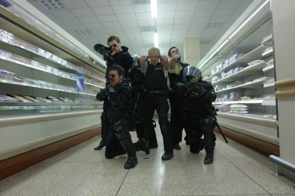

Hot Fuzz

Director: Edgar Wright. Writer: Edgar Write, Simon Pegg. Starring: Simon Pegg and his mates. 2007.
Big Cops. Small Town. Moderate Violence.
A romping lampoon of American buddy cop homoeroticism and Agatha Christie alike, which follows the plight of over-achieving hardass metropolitan cop (Pegg) forcably relegated to the gentile surroundings of an idyllic village. (I particularly liked the dreaded journey to the countryside, as represented by a close-up of the signal bars on Pegg's phone falling to zero, but that probably says more about my own urban snobbery than anything else.)
In keeping with its loveably teenage approach and unapologetically English style, it provides a few golden moments which are absolutely classic. However, one can't help but be distracted from time to time by the fact that it has been crafted more with an endearing enthusiasm than with incisive skill. The barrage of snap shots and hyperkinetic editing tries just a little too hard, and by the third climax of the finale, the whole thing has perhaps outstayed its welcome just a little.
If you like Simon Pegg (Sean of the Dead, Spaced), then this is very much more of the same. Otherwise forgettable.
Rating: 6/10